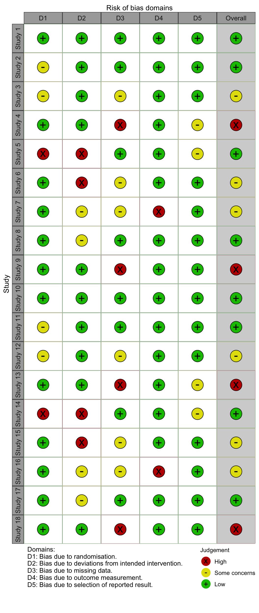

15 バイアスリスクのプロット
Luke A. McGuinness による

この章を引用する場合は
McGuinness, L. A. (2021). Risk of Bias Plots. In Harrer, M., Cuijpers, P., Furukawa, T.A., & Ebert, D.D., Doing Meta-Analysis with R: A Hands-On Guide (online version). https://bookdown.org/MathiasHarrer/Doing_Meta_Analysis_in_R/rob-plots.html.こ の章では、 {robvis} パッケージを使用して、 R でRisk of Bias プロットを作成する方法について説明する。
15.1 イントロダクション
システマティックレビューやメタ分析の一環として、関連する領域別バイアスリスク評価ツールを用いて、含まれる研究の内部妥当性 (バイアスリスク、Risk of Bias) を調べ、この評価結果をグラフで提示すとよいだろう。
コクランハンドブックでは、2種類の図を推奨している。各ドメイン内で所定のバイアスリスク判定を受けた研究の割合を示す要約棒グラフと、各研究のドメインレベルの判定を提示す交通信号プロット (Traffic Light Plot、今のところ定着した日本語訳はない) である。
しかし、これらの図を作成する際に、研究者が利用できる選択肢は限られている。RevMan にはプロットを作成する機能があるが、多くの研究者はシステマティックレビューを行うために RevMan を使用していないため、関連データをシステムにコピーする解決方法は非効率的である。
同様に、MS PowerPoint などのソフトウェアを使用して手作業でグラフを作成するのは時間がかかり、変更が必要な場合は手作業で図を更新しなければならない。さらに、ジャーナルは通常、出版品質 (300-400 dpi 以上) の図を要求するが、RevMan からバイアスリスクの図をエクスポートしたり、手作業で作成したりする場合、品質を維持するのが難しい場合がある。
Figure 15.1: Example RevMan output.
このようなことを避けるために、バイアスリスク評価の要約表を要約プロットまたは交通信号プロットに変換する関数を提供する {robvis} パッケージ (McGuinness and Higgins 2020; McGuinness 2019) を使用して、R Studio 内でバイアスリスク数値を自分で簡単にプロットできるようになる。
15.1.2 バイアスリスクの要約表データをインポート
プロットを作成するために、まず、Excel から R にバイアスリスク評価の結果をインポートする必要がある。なお、{robvis} はデータ作成方法について指定があり、Excel で表を設定する際には以下のガイダンスに必ず従わなければならない。
- 最初の列名は “Study” とし、研究識別子を記述する (例: Anthony et al, 2019)。
- 最後から 2 番目の列名は “Overall” とする。全体のリスクオブバイアス判定を記載する。
- 最後の列名は “Weight” とし、研究の精度の指標 (例えば、メタ分析で各研究に割り当てられた重み、またはメタ分析が行われなかった場合は、各研究のサンプルサイズ) を記述する。詳しくは、Chapter 4.1.1 を参照。
- その他の列は、特定のドメインのバイアスリスク評価結果を含む。
上記のガイダンスを詳しく説明するために、5 つのドメインを持つ ROB2 ツールを例として考えてみよう。このツールで {robvis} が期待する結果のデータセットは 8 列である。
- 列 1. 試験の識別子
- 列 2-6. 1列につき1つの RoB2 ドメイン
- 列 7. 総合的なリスクオブバイアス判定
- 列 8. 重み
Excel では、このバイアスリスクの要約表は次のようになる。

列の名前
４種類あるうちの３種類のテンプレート (ROB2, ROBINS-I, QUADAS-2) では、ドメインレベル判定を含む列の名前は重要ではない。robvis 内のテンプレートが各ドメインを正しく修正する。
Excel で作成した表をカンマ区切りファイル (例: “robdata.csv”) として作業ディレクトリに保存し、以下のコマンドを使用してプログラム的にそのファイルを R に読み込むか、Chapter 2.4 で説明したインポート機能を使用して読み込むことができる。
my_rob_data <- read.csv("robdata.csv", header = TRUE)15.1.3 テンプレート
{robvis} は、使用したバイアスリスク評価ツールに固有のテンプレート図を入力するために、提供されたデータを使用してバイアスリスク図を作成する。現在、{robvis} には、以下の3つのツールのテンプレートが含まれている。
- ROB2 は、ランダム化比較試験のための新しい Cochrane の Risk Of Bias ツール。
- ROBINS-I は、Risk of Bias In Non-randomized Studies of Interventions (ランダム化されていない介入研究におけるバイアスのリスク) ツール。
- QUADAS-2 は、Quality and Applicability of Diagnostic Accuracy Studies, Version 2。
{robvis} には、ROB1 とラベル付けされた特別な汎用テンプレートも含まれている。ランダム化対照試験用の Cochrane risk of bias ツールで使用するために設計されているが、上記のリストに含まれていない他のドメインベースのツールで実行された評価結果を可視化するために使用することも可能である。このテンプレートを使用する際に必要な追加ステップの詳細については、Chapter 15.4 を参照。
15.1.4 データセット例
{robvis} パッケージには、上記の各テンプレートに対応したデータセット例が格納されている。これらは以下のオブジェクトに格納されている。
-
data_rob2:ROB2 ツールのデータ例 -
data_robins:ROBINS-I ツールのデータ例 -
data_quadas:QUADAS-2 ツール用のサンプルデータ -
data_rob1:RoB-1 ツール用のサンプルデータ
データセットは glimpse 関数を用いて探索することができる (Chapter 2.5.1 参照)。例えば、library(robvis) を用いてパッケージをロードしたら、以下のコマンドを実行して ROBINS-I のサンプルデータセットを閲覧してみよう。
glimpse(data_robins)## Rows: 12
## Columns: 10
## $ Study <fct> Study 1, Study 2, Study 3, Study 4, Study 5, Study 6, Study 7,…
## $ D1 <fct> Critical, Moderate, Moderate, Low, Serious, Critical, Critical…
## $ D2 <fct> Low, Low, Low, Low, Serious, Serious, Moderate, Moderate, Low,…
## $ D3 <fct> Critical, Low, Moderate, Serious, Low, Moderate, Moderate, Low…
## $ D4 <fct> Critical, Critical, Critical, Critical, Low, Critical, Serious…
## $ D5 <fct> Low, Low, Critical, Moderate, Moderate, Critical, Critical, Lo…
## $ D6 <fct> Low, Moderate, Low, Low, Low, Moderate, Serious, Low, Serious,…
## $ D7 <fct> Serious, Low, Serious, Critical, Moderate, Serious, Serious, C…
## $ Overall <fct> Critical, Low, Serious, Low, Serious, Serious, Moderate, Moder…
## $ Weight <dbl> 33.3333333, 33.3333333, 0.1428571, 9.0909091, 12.5000000, 25.0…このサンプルデータセットを、このガイドの残りの部分で提示されるプロットを作成するために使用する。
15.2 要約プロット
15.2.1 基本情報
R にバイアスリスク要約表をインポートしたら、バイアスリスク図の作成は非常に簡単である。
まず始めに、ROB2 サンプルデータセット (data_rob2) を用いた単純な重み付き要約棒グラフを、以下のコードを実行して作成する。
rob_summary(data = data_rob2,
tool = "ROB2")15.2.2 プロットを修正
rob_summary 関数には以下のパラメータがある。
-
data. 要約 (ドメイン) レベルの risk-of-bias 評価を含むデータフレーム。最初の列は研究の詳細、2 番目の列は評価の最初のドメイン、最後の列は各研究に割り当てる重み付けを含む。この関数は、データに全体的なリスクオブバイアスの列が含まれていることを想定している。例えば、ROB2.0 のデータセットでは、8列 (研究の詳細1、ドメインレベルの判定5、総合判定1、重み付け1の順) となる。 -
tool. 使用したバイアスリスク評価ツール。現在、RoB2.0 ("ROB2")、"ROBINS-I"、"QUADAS-2"がサポートされている。 -
overall. 図に全体の Risk of Bias を示す追加のバーを含めるかどうかのオプション。デフォルトはFALSEである。 -
weighted. 棒グラフに重みをつけるかどうかを指定するオプション。デフォルトはTRUEで、現在の Cochrane Collaboration のガイダンスに沿ったものである。 -
colour. プロットの配色を指定するための引数である。デフォルトは"cochrane"で、普遍的なコクランカラーを使用する。また、色覚異常者に優しいパレットのプリセットオプションも利用できる (colour = "colourblind")。 -
quiet. プロットを表示せず、静かに生成するための論理オプション。デフォルトはFALSE。
各引数の機能例を以下に示す。
15.2.2.1 tool
tool は、使用するツールテンプレートを定義するための引数である。上の例では、ROB2 テンプレートが使用されている。他の2つの主要なテンプレート、ROBINS-I と QUADAS-2 テンプレートは、以下に示されている。
rob_summary(data = data_robins,
tool = "ROBINS-I")
rob_summary(data = data_quadas,
tool = "QUADAS-2")
15.2.2.2 overall
デフォルトでは、全体の Risk of Bias 判定を表す追加のバーはプロットに含まれない。これを含めたい場合は、overall = TRUE と設定する。例えば
rob_summary(data = data_rob2,
tool = "ROB2",
overall = TRUE)15.2.2.3 重み付けのある棒グラフとない棒グラフ
デフォルトでは、棒グラフは研究の精度の指標で重み付けされ、特定のバイアスのリスクがある研究の割合ではなく、情報の割合を示すようになる。このアプローチは、Cochrane Handbookに沿っている。
このオプションをオフにするには、weighted = FALSE と設定し、重み付けしない棒グラフを作成する。例えば、次の2つのプロットを比較してみてみよう。
rob_summary(data = data_rob2,
tool = "ROB2")
rob_summary(data = data_rob2,
tool = "ROB2",
weighted = FALSE)15.2.2.4 カラースキーム
イギリス英語
アメリカ英語ではなく、イギリス英語の colour であることに注意。両プロット関数の colour 引数は、2つの定義済みカラースキーム、"cochrane" (デフォルト) または "colourblind" から選択するか、あるいは hex code のベクトルを与えて自分自身のパレットを定義することが可能である。例えば、定義済みの "colourblind" パレットを使用するため、以下のようにする。
rob_summary(data = data_rob2,
tool = "ROB2",
colour = "colourblind")自分だけのカラースキームを決めることもできる。
rob_summary(data = data_rob2,
tool = "ROB2",
colour = c("#f442c8","#bef441","#000000"))
独自のカラースキームを定義する場合、離散判定 (例: 「低」、「中」、「高」、「重要」) の数と指定する色の数が同じであることを確認する必要がある。さらに、色はバイアスのリスクの昇順 (例: 「Low」～「Critical」) で指定する必要があり、最初の16進数はバイアスのリスクが “Low” に対応する。
15.3 交通信号プロット
研究者は、評価した各研究の各領域におけるバイアスのリスクを提示したいと思うことがよくある。このプロットは一般的に交通信号プロットと呼ばれ、{robvis} の rob_traffic_light 関数で作成することができる。
15.3.1 基本情報
まず、ROB2 サンプルデータセット( data_rob2 )を用いた交通信号プロットを、以下のコードを実行して作成した。
rob_traffic_light(data = data_rob2,
tool = "ROB2")15.3.2 プロットを修正
rob_summary 関数には以下のパラメータがある。
-
data. 要約 (ドメイン) レベルの risk-of-bias 評価を含むデータフレーム。最初の列は研究の詳細、2 番目の列は評価の最初のドメイン、最後の列は各研究に割り当てる重み付けを含む。この関数は、データに全体的なリスク・オブ・バイアスの列が含まれていることを想定している。例えば、ROB2.0のデータセットでは、8列 (研究の詳細1、ドメインレベルの判断5、総合判断1、重み1、この順) となる。 -
tool. 使用したバイアスリスク評価ツール。現在、RoB2.0 ("ROB2")、"ROBINS-I"、"QUADAS-2"がサポートされている。 -
colour. プロットの配色を指定するための引数である。デフォルトは"cochrane"で、どこにでもあるコクランカラーを使用する。また、色覚異常者に優しいパレット ("colourblind")のプリセットオプションも利用できる。 -
psize.「交通信号」ポイントの大きさを変更するためのオプション。デフォルトは20。 -
quiet. プロットを表示せず、静かに生成するための論理オプション。デフォルトはFALSE。
15.3.2.1 ツール
使用するツールテンプレートを定義するための引数である。ROB2 テンプレートのデモと、他の2つの主要テンプレートである ROBINS-I と QUADAS-2 テンプレートを以下に表示する。
rob_traffic_light(data = data_robins,
tool = "ROBINS-I")
rob_traffic_light(data = data_quadas,
tool = "QUADAS-2")15.3.2.2 カラースキーム
イギリス英語
「色」のスペルは、アメリカ英語ではなく colour である。両プロット関数の colour 引数は、2つの定義済み配色 "cochrane" (デフォルト) と "colourblind" から選択することができる。
例えば、定義済みの "colourblind" パレットを使用する場合。
rob_traffic_light(data = data_rob2,
tool = "ROB2",
colour = "colourblind")自分だけのカラースキームを決めることもできる。
rob_traffic_light(data = data_rob2,
tool = "ROB2",
colour = c("#f442c8","#bef441","#000000"))独自のカラースキームを定義する場合、離散判定 (例: “Low”、“Moderate”、“High”、“Critical”) の数と指定する色の数が同じであることを確認する必要がある。さらに、色はバイアスのリスクの昇順 (例: “Low”～“Critical”) で指定する必要があり、最初の 16 進数はバイアスのリスクが “Low” の色に対応する。
15.3.2.3 ポイントサイズ
多数のバイアスリスク評価を実施した場合、結果の交通信号プロットが長すぎて役に立たないこともある。このような場合には、rob_traffic_light 関数の psize 引数を小さくすることで対応できる (デフォルトは 20)。例えば
# Create bigger dataset (18 studies)
new_rob2_data <- rbind(data_rob2, data_rob2)
new_rob2_data$Study <- paste("Study", seq(1:length(new_rob2_data$Study)))
# Plot bigger dataset, reducing the psize argument from 20 to 8
rob_traffic_light(data = new_rob2_data,
tool = "ROB2",
psize = 8)
15.4 “ROB1” ジェネリックテンプレート
15.4.1 モチベーション
このテンプレートは、プロットに含まれるドメインの柔軟性を高めている。任意の数のドメインを扱うことができ (ドメインの数が設定されている他のツールテンプレートを参照)、結果の図ではユーザー定義の列見出しをドメインのタイトルとして使用する。
15.4.2 ドメイン数の違い
“ROB1” テンプレート (tool = "ROB1") は、さまざまな数の列を扱うことができる。これはもともとROB1アセスメントツールで使用するために設計されたが、頻繁にドメインが追加または削除されるようになった。このテンプレートは他のツール (ROB2、QUADAS-2、ROBINS-I) の調整版を使用して行われた評価の結果を提示すために使用できるが、これは勧めない。他の公表されているツールを使用する著者は、ガイダンスに適合することを確実にするために、前の章で示されたより厳格なテンプレートを使用する必要がある。
15.4.3 ドメイン名
前のセクションで挙げた他のツールでは、ドメインレベルのバイアスリスク判定を含む列の名称は重要ではない。例えば、 D1 、 D2 、 D3 などの名前が一般的である。しかし、"ROB1" テンプレートを使用する場合は、この限りではない。
data_rob2 と data_rob1 の列見出しを比較する (ここでは比較しやすいように横向きで表示している)。
|
|
ROB2 サンプルデータセットのドメイン列 (列 2-6) には、 D1 ～ D5 という任意の名前が付けられているが、これは ROB2 ガイダンスで与えられた正しいドメインタイトルに対応するようにツールで上書きされるためである。
一方、ROB1 サンプルデータセットのドメイン列 (列 2-8) は、rob_summary と rob_traffic_light が生成する図に使用されるため、正しくラベル付けされていることがわかる。
例として、“Random.sequence.generation” 列の名前を “これはテスト” に変更してみよう。rob_summary 図では、最初のバーのタイトルが変更され、rob_traffic_light 図では、この変更を反映してキャプションが更新されている。
# data_rob1 データセットのコピーを作成
new_rob1_data <- data_rob1
# 最初のドメインの列名を変更
colnames(new_rob1_data)[2] <- "これはテスト"
# 要約棒グラフを作成; macOS では文字化けするためフォント (ただし y 軸が追加されてしまう)
rob_summary(data = new_rob1_data, tool = "ROB1") +
theme_classic(base_family = "Hiragino Kaku Gothic Pro W3")
# 交通信号プロットを作成
rob_traffic_light(data = new_rob1_data,
tool = "ROB1")15.5 カスタマイズと保存
15.5.1 {ggplot2} パッケージ
{robvis} 関数 (rob_summary と rob_traffic_light) は共に ggplot オブジェクトを生成するので、{ggplot2} パッケージの関数を使用してカスタマイズしたり保存したりすることができる。このパッケージを読み込むには、次のコードを使用する。
15.5.2 プロットの修正
プロットには、{ggplot2} 関数を使ってポストプロダクションで行うことができる様々な修正がある。便利な例は、プロットにタイトルを追加することである。
# 事前に ggplot2 がインストールされ、ロードされていること
rob_summary(data_rob2, "ROB2") +
ggtitle("Your custom title")15.5.3 プロットの保存
バイアスのリスクのプロットを保存するために、まず <- 演算子を用いてオブジェクトに割り当て、次に {ggplot2} パッケージの ggsave 関数を用いて保存する。
要約棒グラフを保存する際は、高さと幅をデフォルト値にして、以下のコードを使用することを勧める。
# プロットを作成し、オブジェクトに格納
rob_barplot <- rob_summary(data_rob2, "ROB2")
# プロットを保存
ggsave(plot = rob_barplot, # 保存するオブジェクト
filename = "robplot2.png", # 保存先
width = 8, # 画像の幅 (推奨値)
height = 2.41, # 画像の高さ (推奨値)
dpi = 1000) # 画像の解像度交通信号プロットも、保存する方法は同じである。しかし、width と height パラメータの最適な値は、含まれる研究の数や名前が変わると、プロットごとに異なるため、推奨値はない。
15.5.4 異なるフォーマットで保存
プロットは、ファイル名の拡張子を変えるだけで (例えば “.png” から “.pdf” に)、上記の関数を使って様々なフォーマットで保存することが可能である。使用可能なフォーマットは .png、.pdf、.tiff、.svg74 である。
例えば、上で作成した棒グラフ (rob_barplot) を PDF として保存するには、以下のようにする。
# プロットを保存
ggsave(plot = rob_barplot,
filename = "robplot2.pdf", # 拡張子を ".pdf"
width = 8,
height = 2.41,
dpi = 1000)15.6 ウェブアプリ
robvis の機能を手軽に体験してもらうために、{robvis} パッケージのグラフィカルなインターフェースを提供する Web アプリケーションを作成した。
ウェブアプリはこちらで公開されている。以下に、簡単なガイド付きウォークスルーを紹介する。
15.6.1 ランディングページ
このページでは、前の章で紹介したガイダンスの簡潔版、特にデータセットのセットアップについて紹介した。さらに重要なのは、各ツールのサンプルデータセットを CSV ファイルとしてダウンロードし、アプリとの対話や機能探索に利用できることである。
15.6.2 交通信号プロットページ
2番目のタブをクリックすると、以下の画面が表示される。

このメニューは rob_traffic_light 関数のグラフィカルインターフェイスとして機能する。
- “Browse…” をクリックし、CSV ファイルを保存した場所に移動して、バイアスリスクの要約表をアップロードした。
- ドロップダウン・ボックスを使用して、バイアス・リスクの評価を行うために使用するツールを選択する。
基本的な交通信号のプロットがウィンドウの右側に表示されるはずである。以下のオプションを使ってプロットをカスタマイズすることができる。
- 使用する配色を選択してみよう (“Cochrane” または “Colour-blind friendly” のいずれか)
- ポイントサイズの変更 (1つの交通信号プロット上に多数の研究をプロットしたい場合に有効)
- 文字サイズの変更
プロットが完成したら、必要な形式 (.png, .jpg, .tiff, .eps) を選んで “Download plot” ボタンをクリックすれば、プロットをダウンロードすることができる。最初に形式を選択しないと、ダウンロードエラーになる。
15.6.3 要約プロットページ
3 番目のタブをクリックすると、以下の画面が表示される。
 このメニューは
このメニューは rob_summary 関数のグラフィカルインターフェイスとして機能する。
- “Browse…” をクリックし、CSV ファイルを保存した場所に移動して、バイアスリスクの要約表をアップロードする。
- ドロップダウン・ボックスを使用して、バイアス・リスクの評価を行うために使用するツールを選択する。
基本的な加重要約棒グラフがウィンドウの右側に表示されるはずである。
以下のオプションを使用して、プロットをカスタマイズすることができる。
- 図形の作成時にウェイトを使用するかどうかを選択することができる。
- バイアス判定全体のリスク分布を表す棒グラフを追加してみよう。
- 使用する配色を選択してみよう (“Cochrane” または “Colour-blind friendly” のいずれか)
交通信号プロットタブと同様に、必要なフォーマットを選択し、“Download plot” ボタンをクリックすると、プロットをダウンロードすることができる。
\[\tag*{$\blacksquare$}\]